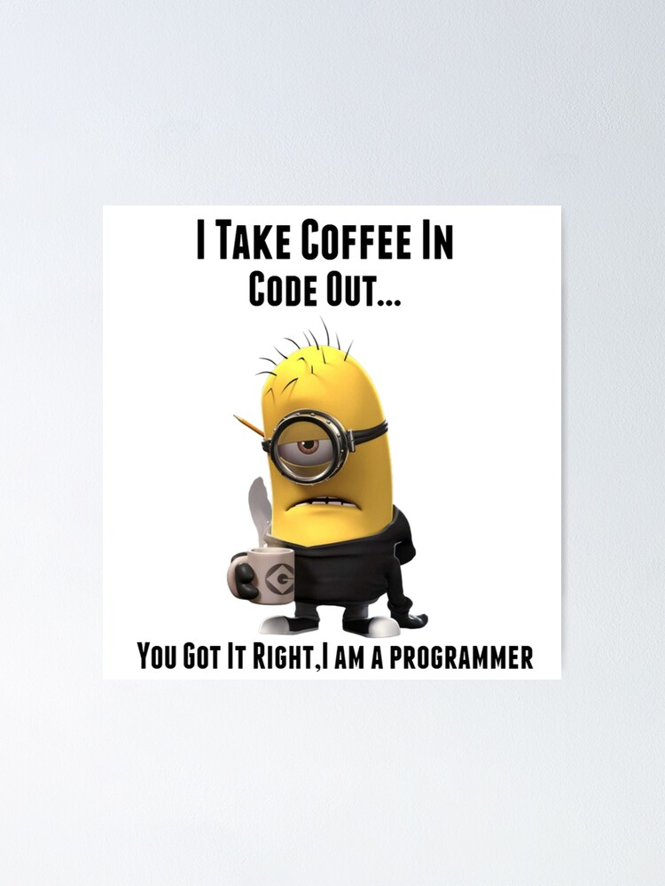

MELINA OBANDO SANCHEZ
(MELI)


Pasa el mouse sobre mi..!!
ACERCA DE MI
Cualidades de líder, organizada, enfocada a resultados. Habilidades de comunicación y negociación. Siempre dispuesta a aprender. Trabajo muy bien en equipo. Resolución de problemas en varios entornos. Experiencia de servicio al cliente de alta calidad. Manejo de múltiples tareas al mismo tiempo y trabajo eficiente bajo presión. Responsable, Carismática y Puntual.